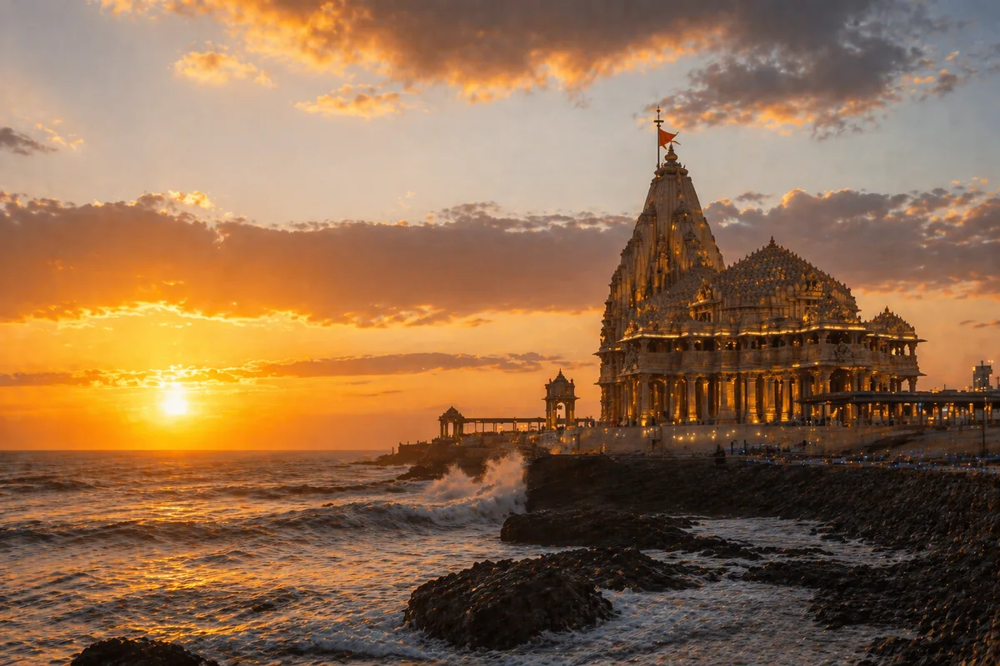

Sacred Gujarat Circuit
Somnath & Dwarka
from Ahmedabad
Somnath Jyotirlinga · Dwarkadhish Temple · Nageshwar · Beyt Dwarka
Enquire NowAbout the Somnath and Dwarka Circuit
Somnath and Dwarka are two of Gujarat's most revered sacred destinations. Somnath is home to the first of the twelve Jyotirlingas, while Dwarka is one of the four sacred dhams in Hinduism and the ancient kingdom of Lord Krishna. Together they form a complete spiritual circuit entirely within Gujarat, accessible from Ahmedabad in a comfortable multi-day journey.
Spectrum Tour and Travel has served this route since 2008. Whether you travel as a family of four or a group of fifty, we provide the right vehicle, a verified and experienced driver, and a completely organised experience from departure to return.
Suggested Itineraries
Option 01
3-Day Express Circuit
- Day 1: Ahmedabad to Somnath (approx. 5.5 hrs). Evening aarti at Somnath Temple.
- Day 2: Somnath local visits including Prabhasa Patan Museum, Bhalka Tirth, and Triveni Sangam. Depart for Dwarka (3 hrs).
- Day 3: Dwarkadhish Temple darshan, Nageshwar Jyotirlinga, Beyt Dwarka. Return to Ahmedabad.
Option 02 — Recommended
5-Day Relaxed Circuit
- Includes Gir National Park wildlife safari en route
- Porbandar visit: birthplace of Mahatma Gandhi and Sudama Mandir
- More relaxed darshan timings, ideal for senior and elderly pilgrims
- Optional halt at Sasan Gir for comfortable wildlife viewing
What is Included
Fleet and Comfort
Well-Maintained Vehicles
- Innova Crysta and premium sedans for smaller family groups
- 14, 17 and 20-seater AC Tempo Travellers for larger parties
- GPS navigation and CCTV installed in all fleet vehicles
- Vehicles sanitised and inspected before every trip
Drivers and Service
Verified, Experienced Drivers
- Uniformed drivers with valid ID cards and all required state permits
- Familiar with Gujarat state highways and all pilgrimage halt points
- Quotes include driver allowances, state taxes, and toll charges
- 24-hour travel desk support throughout your journey
Why Choose Spectrum?
This circuit covers long stretches of Gujarat state highways. Our drivers hold valid permits across all districts, are GPS-tracked, and carry proper identification throughout the journey. Founded in 2008, Spectrum has spent over 16 years building trust with Gujarat's pilgrim community.
We provide 24-hour support during your trip. If anything changes, including departure time, halts, or hotel arrangements, our travel desk responds within the hour.